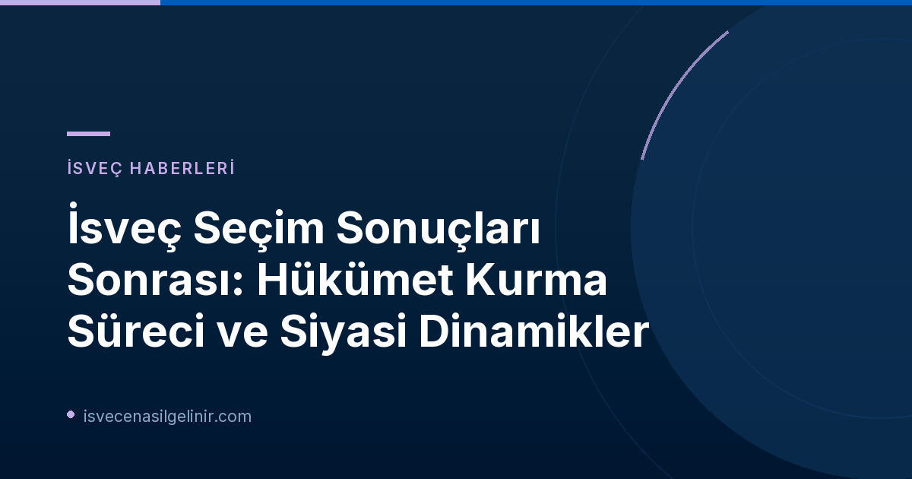

İsveç Seçim Sonuçları Sonrası: Hükümet Kurma Sürecinde Neler Oluyor?
2026 İsveç genel seçimlerinin ardından siyasi arena hareketli günler yaşıyor. Seçim sonuçlarının kesinleşmesiyle birlikte, yeni bir hükümetin kurulması için talman başkanlığında görüşmeler hız kazanmış durumda. Ülkenin kaderini belirleyecek bu süreçte, partiler arasındaki uzlaşmazlıklar ve koalisyon arayışları gündemin ana maddesini oluşturuyor. SVT'nin deneyimli politika muhabiri Julia Lindvall, okurlardan gelen soruları yanıtlayarak bu karmaşık süreci aydınlatıyor.
Talman Görüşmeleri ve Başbakanlık Seçimi: Kilit Tarihler ve Süreç
Yeni bir Başbakanın seçimi ve hükümetin oluşumu, İsveç yasalarına göre belirli bir prosedürü takip eder. Talman, seçim sonrası en büyük partilerin liderleriyle görüşerek hükümet kurma potansiyeli olan bir lideri belirler. Bu süreçte karşılaşılan en önemli engellerden biri, Başbakanlık postunun sadece bir kişiyle ilgili olmayıp, kurulacak hükümetin yapısıyla doğrudan bağlantılı olmasıdır. Talman, yeni Başbakan oylamasını yaptığında, aynı zamanda hükümette yer alacak partileri de kamuoyuna açıklamak zorundadır.
Öne Çıkan Bilgiler ve Kilit Tarihler
- 28 Eylül: Yeni Talman seçimi gerçekleşecek. Bu tarihte, mevcut Başbakan Magdalena Andersson'a ilk sondaj görevinin ne kadar süreyle verileceği de açıklanacak. Yeni Talman'ın bununla ilgili bir basın toplantısı düzenlemesi bekleniyor.
- Başbakanlık ve Hükümet İlişkisi: Bir Başbakanın seçilmesi, ilgili partilerin hükümette yer almasının veya dışarıdan pasif destek vermesinin netleşmesine bağlıdır.
- Erken Seçim İhtimali: Eğer dört Başbakan oylaması sonuç vermezse, erken seçim kararı alınabilir. Ancak bu son çare olarak görülmektedir.
Partilerin Kilit Rolleri: S, C, V, M, L, KD ve SD'nin Konumları
İsveç siyasetindeki kilitlenmenin temel nedenlerinden biri, farklı partilerin hükümet kurma ve destekleme konusundaki net duruşlarıdır. İşte ana partilerin bu konudaki pozisyonları:
- Sosyal Demokratlar (S): Başbakan Andersson'a hükümet kurma görevi verilmiş olsa da, Sol Parti (V) ve Merkez Partisi (C) arasındaki kilitlenme süreci oldukça zorlaştırıyor.
- Sol Parti (V): V, bir hükümeti dışarıdan desteklemek yerine, hükümette aktif olarak yer alma şartı koşuyor. Bu durum, Sosyal Demokratların dar kapsamlı bir koalisyon kurma çabalarını engelliyor.
- Merkez Partisi (C): C, özellikle İsveç Demokratları'nın (SD) İsveç siyasetinde herhangi bir etkisi olmasını istemeyen katı bir çizgiye sahip. Bu nedenle, SD'nin hükümette yer aldığı veya pasif olarak desteklediği bir hükümete onay vermeyeceklerini belirtiyorlar.
- Ilımlılar (M), Liberal Parti (L), Hristiyan Demokratlar (KD) ve İsveç Demokratları (SD): Sağ bloğun oluşturacağı bir koalisyon ihtimali de konuşuluyor. Ancak C'nin SD'ye karşı duruşu, sağ blok içindeki potansiyel bir işbirliğini zorlaştırıyor. SD, hükümette yer almasa dahi, önceki dönemde olduğu gibi politikalar üzerinde büyük bir etkiye sahip olabileceğini kanıtlamıştır.
İsveç'in siyasi iklimi, zaman zaman İsveç Vatandaşlık Sınavı gibi sitelerden güncel bilgiler edinmeyi gerektiren karmaşık dinamikler sunabilir. Bu tür kilitlenmelerin İsveç'in gelecekteki politikalarında nasıl bir yön çizeceği büyük merak konusu.
Olası Hükümet Senaryoları ve İleriye Yönelik Beklentiler
Mevcut siyasi tıkanıklık göz önüne alındığında, birkaç olası senaryo üzerinde duruluyor:
- S + MP Azınlık Hükümeti: Sosyal Demokratlar ve Çevre Partisi (MP) ile dar kapsamlı bir azınlık hükümeti kurulması ihtimali var. Bu senaryo, V ve C'nin pozisyonlarından geri adım atmak zorunda kalacağı bir baskı süreciyle mümkün olabilir.
- Tek Parti S Hükümeti: Yalnızca Sosyal Demokratların oluşturacağı bir azınlık hükümeti de alternatifler arasında yer alıyor.
- Talman'ın Yeniden Görevlendirmesi: Başbakan Andersson'ın ilk sondaj görevinde başarılı olamaması durumunda, görevin otomatik olarak Ilımlılar lideri Kristersson'a geçmeyeceği belirtilmiştir. Talman, Andersson'ın bir çözüm bulma potansiyeline inanırsa, ona tekrar görev verebilir.
- Parti Pozisyon Değişiklikleri: Art arda gelecek Başbakan oylamalarının başarısız olması halinde, hem V hem de C'nin şu anki katı pozisyonlarından taviz vermek zorunda kalabileceği ve dolayısıyla bir uzlaşmanın doğabileceği düşünülüyor.
Önümüzdeki haftanın, İsveç hükümetinin geleceği hakkında daha net ipuçları vermesi bekleniyor. Partiler, seçmenlerin beklentilerini karşılamak ve ülkenin yönetiminde istikrarı sağlamak adına zorlu kararlar almak zorunda kalacaklardır.
Referanslar
- SVT Nyheter Inrikes: Efter valet – vad händer nu?
İsveç'teki Gelişmeleri Takipte Kalın!
İsveç siyasetindeki güncel gelişmeleri kaçırmayın. Ülkedeki yaşam ve göçmenlik hakkında daha fazla bilgi edinmek için bültenimize abone olun.